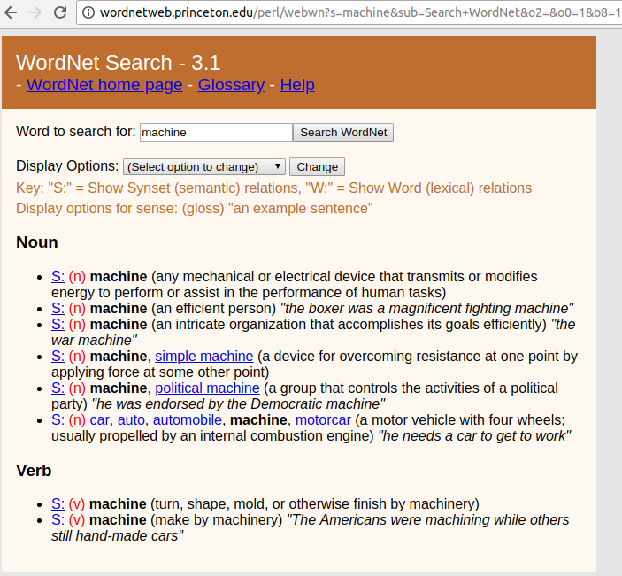

Run this command from an Anaconda prompt (within the mldds03 environment):
(mldds03) conda install gensim cython nltkhttps://radimrehurek.com/gensim/
http://docs.cython.org/en/latest/src/quickstart/install.html
Installation: https://www.nltk.org/install.html
To represent word meanings in an efficient way
To express word meaning based on context
WordNet is a well-known database that contains sets of synonyms of English words.
In this walkthrough, we will use NLTK to query WordNet.
For example, when searching for the word "machine":

Besides the browser, you can use NLTK to query WordNet.
Examples: http://www.nltk.org/howto/wordnet.html
API: http://www.nltk.org/_modules/nltk/corpus/reader/wordnet.html
import nltk
from nltk.corpus import wordnet as wn
# query synsets for 'machine'
wn.synsets('machine')
[Synset('machine.n.01'),
Synset('machine.n.02'),
Synset('machine.n.03'),
Synset('machine.n.04'),
Synset('machine.n.05'),
Synset('car.n.01'),
Synset('machine.v.01'),
Synset('machine.v.02')]
Synsets are a set of synonyms that share a common meaning.
Synset attributes, accessible via methods with the same name:
# Loop to print out what each synset represents
# Each set is a different semantic meaning of the word 'machine'
for s in wn.synsets('machine'):
print(s.hypernyms())
[Synset('device.n.01')]
[Synset('person.n.01')]
[Synset('organization.n.01')]
[Synset('mechanical_device.n.01')]
[Synset('organization.n.01')]
[Synset('motor_vehicle.n.01')]
[Synset('shape.v.02')]
[Synset('produce.v.02')]
# check if another word is similar to 'machine', using it's 'device' meaning
# larger number means more similarity
machine_synset1 = wn.synsets('machine')[0]
robot_synset1 = wn.synsets('robot')[0]
print('robot vs. machine similarity:', robot_synset1.path_similarity(machine_synset1))
sunset_synset1 = wn.synsets('sunset')[0]
print('sunset vs. machine similarity:', sunset_synset1.path_similarity(machine_synset1))
robot vs. machine similarity: 0.25 sunset vs. machine similarity: 0.058823529411764705
for s in wn.synsets('machine'):
print(s.definition())
any mechanical or electrical device that transmits or modifies energy to perform or assist in the performance of human tasks an efficient person an intricate organization that accomplishes its goals efficiently a device for overcoming resistance at one point by applying force at some other point a group that controls the activities of a political party a motor vehicle with four wheels; usually propelled by an internal combustion engine turn, shape, mold, or otherwise finish by machinery make by machinery
Instead of static lists of words, word vectors are trained from examples of text.
The examples of text (text corpus) should be "large enough" to capture the possible meanings of the word.
Anyone can train a word vector. Unlike SynSets, you don't need to be a linguist or expert in word meanings. You just need enough examples.
These are available, but are usually huge downloads (GB)
Instead, we will train our own Word Vectors. This is most flexible because you can adapt to your particular text corpus.
For demonstration purposes, we'll start with Wikipedia articles.
We'll use a python library that wraps the Wikipedia APIs.
https://pypi.org/project/wikipedia/
Run this from an Anaconda prompt (within the mldds03 environment):
(mldds03) pip install wikipediaimport wikipedia
from wikipedia import search, page
# Get our documents: wikipedia articles
topic = 'singapore'
titles = search(topic)
titles
['Singapore', 'Singapore Sling', 'History of Singapore', 'Singapore dollar', 'Languages of Singapore', 'Education in Singapore', 'Singapore Airlines fleet', 'Caning in Singapore', 'Singlish', 'Demographics of Singapore']
# retrieve all pages
wikipages = [page(title) for title in titles]
# inspect the first page
wikipages[0].summary
'Singapore ( ( listen)), officially the Republic of Singapore, is a sovereign city-state and island country in Southeast Asia. It lies one degree (137 kilometres or 85 miles) north of the equator, at the southern tip of the Malay Peninsula, with Indonesia\'s Riau Islands to the south and Peninsular Malaysia to the north. Singapore\'s territory consists of one main island along with 62 other islets. Since independence, extensive land reclamation has increased its total size by 23% (130 square kilometres or 50 square miles). The country is known for its transition from third world to first world in a single generation, under the leadership of its founding father, Lee Kuan Yew.Stamford Raffles founded colonial Singapore in 1819 as a trading post of the British East India Company. After the company\'s collapse in 1858, the islands were ceded to the British Raj as a crown colony. During the Second World War, Singapore was occupied by Japan. It gained independence from the UK in 1963 by federating with other former British territories to form Malaysia, but separated two years later over ideological differences, becoming a sovereign nation in 1965. After early years of turbulence and despite lacking natural resources and a hinterland, the nation developed rapidly as an Asian Tiger economy, based on external trade and its workforce.\nSingapore is a global hub for education, entertainment, finance, healthcare, human capital, innovation, logistics, manufacturing, technology, tourism, trade, and transport. The city ranks highly in numerous international rankings, and has been recognized as the most "technology-ready" nation (WEF), top International-meetings city (UIA), city with "best investment potential" (BERI), world\'s smartest city, world\'s safest country, third-most competitive country, third-largest foreign exchange market, third-largest financial centre, third-largest oil refining and trading centre, fifth-most innovative country, and the second-busiest container port. The Economist has ranked Singapore as the most expensive city to live in, since 2013. It is identified as a tax haven. Singapore is the only country in Asia with an AAA sovereign rating from all major rating agencies, and one of 11 worldwide. Globally, the Port of Singapore and Changi Airport have held the titles of leading "Maritime Capital" and "Best Airport" respectively for consecutive years, while Singapore Airlines is the 2018 "World\'s Best Airline".Singapore ranks 5th on the UN Human Development Index with the 3rd highest GDP per capita. It is placed highly in key social indicators: education, healthcare, life expectancy, quality of life, personal safety and housing. Although income inequality is high, 90% of homes are owner-occupied. The Singaporean passport is joint first with Japan for visa-free travel granted by the most countries to its citizens.The city-state is home to 5.6 million residents, 39% of whom are foreign nationals, including permanent residents. There are four official languages: English (common and first language), Malay, Mandarin Chinese and Tamil; almost all Singaporeans are bilingual. Its cultural diversity is reflected in its extensive ethnic cuisine and major festivals. Singapore is a conservative society and Pew Research finds that Singapore has the highest religious diversity of any country. Multiracialism has been enshrined in its consitution since independence, and continues to shape national policies in education, housing, politics, among others.\nSingapore is a unitary multiparty parliamentary republic with a Westminster system of unicameral parliamentary government. The People\'s Action Party has won every election since self-government began in 1959. As one of the five founding members of ASEAN, Singapore is the host of the Asia-Pacific Economic Cooperation (APEC) Secretariat, as well as many international conferences and events. It is also a member of the East Asia Summit, Non-Aligned Movement and the Commonwealth of Nations.'
import re # python regular expressions library
import nltk
from nltk.corpus import stopwords
from nltk.stem import PorterStemmer
# Download NLTK corpora
# List of available corpora: http://www.nltk.org/book/ch02.html#tab-corpora
# 1. Download the Punkt sentence tokenizer
# https://www.nltk.org/_modules/nltk/tokenize/punkt.html
nltk.download('punkt')
# 2. Download the Stop Words corpus
nltk.download('stopwords')
# 3. Helper function to convert text
def text_to_sentence_wordlists(text, remove_stopwords=True):
"""Cleans and converts text to a list of lists of tokens
Args:
text: input text
remove_stopwords: whether to remove stopwords
Returns: a tuple
A list of lists of tokens that looks like:
[["cat", "say", "meow"], ["dog", "say", "woof"]]
Total of words
"""
# Split into sentences
# Reference: http://www.nltk.org/api/nltk.tokenize.html
sentences = nltk.sent_tokenize(text)
# set of stopwords
stops = set(stopwords.words('english'))
stemmer = PorterStemmer()
wordcount = 0
result = []
for sentence in sentences:
# Remove non-letters and numbers
sentence = re.sub('[^a-zA-Z0-9]', ' ', sentence)
# Convert to lowercase
sentence = sentence.lower()
# Tokenize the sentence into words
tokens = nltk.word_tokenize(sentence)
if remove_stopwords:
# Remove stop words
tokens = [token for token in tokens if not token in stops]
# Stem the words
tokens = [stemmer.stem(t) for t in tokens]
result += [tokens]
wordcount += len(tokens)
return (result, wordcount)
[nltk_data] Downloading package punkt to [nltk_data] C:\Users\issohl\AppData\Roaming\nltk_data... [nltk_data] Package punkt is already up-to-date! [nltk_data] Downloading package stopwords to [nltk_data] C:\Users\issohl\AppData\Roaming\nltk_data... [nltk_data] Package stopwords is already up-to-date!
# Test our helper function to see what it does
text = wikipages[0].summary
print('===== Original text for first article =====')
print(text)
wordlist, count = text_to_sentence_wordlists(text,
remove_stopwords=False)
print('\n===== Stem words [%d words] =====' % count)
print(wordlist)
wordlist, count = text_to_sentence_wordlists(text)
print('\n===== Stem words - stopwords [%d words] =====' % count)
print(wordlist)
===== Original text for first article ===== Singapore ( ( listen)), officially the Republic of Singapore, is a sovereign city-state and island country in Southeast Asia. It lies one degree (137 kilometres or 85 miles) north of the equator, at the southern tip of the Malay Peninsula, with Indonesia's Riau Islands to the south and Peninsular Malaysia to the north. Singapore's territory consists of one main island along with 62 other islets. Since independence, extensive land reclamation has increased its total size by 23% (130 square kilometres or 50 square miles). The country is known for its transition from third world to first world in a single generation, under the leadership of its founding father, Lee Kuan Yew.Stamford Raffles founded colonial Singapore in 1819 as a trading post of the British East India Company. After the company's collapse in 1858, the islands were ceded to the British Raj as a crown colony. During the Second World War, Singapore was occupied by Japan. It gained independence from the UK in 1963 by federating with other former British territories to form Malaysia, but separated two years later over ideological differences, becoming a sovereign nation in 1965. After early years of turbulence and despite lacking natural resources and a hinterland, the nation developed rapidly as an Asian Tiger economy, based on external trade and its workforce. Singapore is a global hub for education, entertainment, finance, healthcare, human capital, innovation, logistics, manufacturing, technology, tourism, trade, and transport. The city ranks highly in numerous international rankings, and has been recognized as the most "technology-ready" nation (WEF), top International-meetings city (UIA), city with "best investment potential" (BERI), world's smartest city, world's safest country, third-most competitive country, third-largest foreign exchange market, third-largest financial centre, third-largest oil refining and trading centre, fifth-most innovative country, and the second-busiest container port. The Economist has ranked Singapore as the most expensive city to live in, since 2013. It is identified as a tax haven. Singapore is the only country in Asia with an AAA sovereign rating from all major rating agencies, and one of 11 worldwide. Globally, the Port of Singapore and Changi Airport have held the titles of leading "Maritime Capital" and "Best Airport" respectively for consecutive years, while Singapore Airlines is the 2018 "World's Best Airline".Singapore ranks 5th on the UN Human Development Index with the 3rd highest GDP per capita. It is placed highly in key social indicators: education, healthcare, life expectancy, quality of life, personal safety and housing. Although income inequality is high, 90% of homes are owner-occupied. The Singaporean passport is joint first with Japan for visa-free travel granted by the most countries to its citizens.The city-state is home to 5.6 million residents, 39% of whom are foreign nationals, including permanent residents. There are four official languages: English (common and first language), Malay, Mandarin Chinese and Tamil; almost all Singaporeans are bilingual. Its cultural diversity is reflected in its extensive ethnic cuisine and major festivals. Singapore is a conservative society and Pew Research finds that Singapore has the highest religious diversity of any country. Multiracialism has been enshrined in its consitution since independence, and continues to shape national policies in education, housing, politics, among others. Singapore is a unitary multiparty parliamentary republic with a Westminster system of unicameral parliamentary government. The People's Action Party has won every election since self-government began in 1959. As one of the five founding members of ASEAN, Singapore is the host of the Asia-Pacific Economic Cooperation (APEC) Secretariat, as well as many international conferences and events. It is also a member of the East Asia Summit, Non-Aligned Movement and the Commonwealth of Nations. ===== Stem words [619 words] ===== [['singapor', 'listen', 'offici', 'the', 'republ', 'of', 'singapor', 'is', 'a', 'sovereign', 'citi', 'state', 'and', 'island', 'countri', 'in', 'southeast', 'asia'], ['it', 'lie', 'one', 'degre', '137', 'kilometr', 'or', '85', 'mile', 'north', 'of', 'the', 'equat', 'at', 'the', 'southern', 'tip', 'of', 'the', 'malay', 'peninsula', 'with', 'indonesia', 's', 'riau', 'island', 'to', 'the', 'south', 'and', 'peninsular', 'malaysia', 'to', 'the', 'north'], ['singapor', 's', 'territori', 'consist', 'of', 'one', 'main', 'island', 'along', 'with', '62', 'other', 'islet'], ['sinc', 'independ', 'extens', 'land', 'reclam', 'ha', 'increas', 'it', 'total', 'size', 'by', '23', '130', 'squar', 'kilometr', 'or', '50', 'squar', 'mile'], ['the', 'countri', 'is', 'known', 'for', 'it', 'transit', 'from', 'third', 'world', 'to', 'first', 'world', 'in', 'a', 'singl', 'gener', 'under', 'the', 'leadership', 'of', 'it', 'found', 'father', 'lee', 'kuan', 'yew', 'stamford', 'raffl', 'found', 'coloni', 'singapor', 'in', '1819', 'as', 'a', 'trade', 'post', 'of', 'the', 'british', 'east', 'india', 'compani'], ['after', 'the', 'compani', 's', 'collaps', 'in', '1858', 'the', 'island', 'were', 'cede', 'to', 'the', 'british', 'raj', 'as', 'a', 'crown', 'coloni'], ['dure', 'the', 'second', 'world', 'war', 'singapor', 'wa', 'occupi', 'by', 'japan'], ['it', 'gain', 'independ', 'from', 'the', 'uk', 'in', '1963', 'by', 'feder', 'with', 'other', 'former', 'british', 'territori', 'to', 'form', 'malaysia', 'but', 'separ', 'two', 'year', 'later', 'over', 'ideolog', 'differ', 'becom', 'a', 'sovereign', 'nation', 'in', '1965'], ['after', 'earli', 'year', 'of', 'turbul', 'and', 'despit', 'lack', 'natur', 'resourc', 'and', 'a', 'hinterland', 'the', 'nation', 'develop', 'rapidli', 'as', 'an', 'asian', 'tiger', 'economi', 'base', 'on', 'extern', 'trade', 'and', 'it', 'workforc'], ['singapor', 'is', 'a', 'global', 'hub', 'for', 'educ', 'entertain', 'financ', 'healthcar', 'human', 'capit', 'innov', 'logist', 'manufactur', 'technolog', 'tourism', 'trade', 'and', 'transport'], ['the', 'citi', 'rank', 'highli', 'in', 'numer', 'intern', 'rank', 'and', 'ha', 'been', 'recogn', 'as', 'the', 'most', 'technolog', 'readi', 'nation', 'wef', 'top', 'intern', 'meet', 'citi', 'uia', 'citi', 'with', 'best', 'invest', 'potenti', 'beri', 'world', 's', 'smartest', 'citi', 'world', 's', 'safest', 'countri', 'third', 'most', 'competit', 'countri', 'third', 'largest', 'foreign', 'exchang', 'market', 'third', 'largest', 'financi', 'centr', 'third', 'largest', 'oil', 'refin', 'and', 'trade', 'centr', 'fifth', 'most', 'innov', 'countri', 'and', 'the', 'second', 'busiest', 'contain', 'port'], ['the', 'economist', 'ha', 'rank', 'singapor', 'as', 'the', 'most', 'expens', 'citi', 'to', 'live', 'in', 'sinc', '2013'], ['it', 'is', 'identifi', 'as', 'a', 'tax', 'haven'], ['singapor', 'is', 'the', 'onli', 'countri', 'in', 'asia', 'with', 'an', 'aaa', 'sovereign', 'rate', 'from', 'all', 'major', 'rate', 'agenc', 'and', 'one', 'of', '11', 'worldwid'], ['global', 'the', 'port', 'of', 'singapor', 'and', 'changi', 'airport', 'have', 'held', 'the', 'titl', 'of', 'lead', 'maritim', 'capit', 'and', 'best', 'airport', 'respect', 'for', 'consecut', 'year', 'while', 'singapor', 'airlin', 'is', 'the', '2018', 'world', 's', 'best', 'airlin', 'singapor', 'rank', '5th', 'on', 'the', 'un', 'human', 'develop', 'index', 'with', 'the', '3rd', 'highest', 'gdp', 'per', 'capita'], ['it', 'is', 'place', 'highli', 'in', 'key', 'social', 'indic', 'educ', 'healthcar', 'life', 'expect', 'qualiti', 'of', 'life', 'person', 'safeti', 'and', 'hous'], ['although', 'incom', 'inequ', 'is', 'high', '90', 'of', 'home', 'are', 'owner', 'occupi'], ['the', 'singaporean', 'passport', 'is', 'joint', 'first', 'with', 'japan', 'for', 'visa', 'free', 'travel', 'grant', 'by', 'the', 'most', 'countri', 'to', 'it', 'citizen', 'the', 'citi', 'state', 'is', 'home', 'to', '5', '6', 'million', 'resid', '39', 'of', 'whom', 'are', 'foreign', 'nation', 'includ', 'perman', 'resid'], ['there', 'are', 'four', 'offici', 'languag', 'english', 'common', 'and', 'first', 'languag', 'malay', 'mandarin', 'chines', 'and', 'tamil', 'almost', 'all', 'singaporean', 'are', 'bilingu'], ['it', 'cultur', 'divers', 'is', 'reflect', 'in', 'it', 'extens', 'ethnic', 'cuisin', 'and', 'major', 'festiv'], ['singapor', 'is', 'a', 'conserv', 'societi', 'and', 'pew', 'research', 'find', 'that', 'singapor', 'ha', 'the', 'highest', 'religi', 'divers', 'of', 'ani', 'countri'], ['multiraci', 'ha', 'been', 'enshrin', 'in', 'it', 'consitut', 'sinc', 'independ', 'and', 'continu', 'to', 'shape', 'nation', 'polici', 'in', 'educ', 'hous', 'polit', 'among', 'other'], ['singapor', 'is', 'a', 'unitari', 'multiparti', 'parliamentari', 'republ', 'with', 'a', 'westminst', 'system', 'of', 'unicamer', 'parliamentari', 'govern'], ['the', 'peopl', 's', 'action', 'parti', 'ha', 'won', 'everi', 'elect', 'sinc', 'self', 'govern', 'began', 'in', '1959'], ['as', 'one', 'of', 'the', 'five', 'found', 'member', 'of', 'asean', 'singapor', 'is', 'the', 'host', 'of', 'the', 'asia', 'pacif', 'econom', 'cooper', 'apec', 'secretariat', 'as', 'well', 'as', 'mani', 'intern', 'confer', 'and', 'event'], ['it', 'is', 'also', 'a', 'member', 'of', 'the', 'east', 'asia', 'summit', 'non', 'align', 'movement', 'and', 'the', 'commonwealth', 'of', 'nation']] ===== Stem words - stopwords [400 words] ===== [['singapor', 'listen', 'offici', 'republ', 'singapor', 'sovereign', 'citi', 'state', 'island', 'countri', 'southeast', 'asia'], ['lie', 'one', 'degre', '137', 'kilometr', '85', 'mile', 'north', 'equat', 'southern', 'tip', 'malay', 'peninsula', 'indonesia', 'riau', 'island', 'south', 'peninsular', 'malaysia', 'north'], ['singapor', 'territori', 'consist', 'one', 'main', 'island', 'along', '62', 'islet'], ['sinc', 'independ', 'extens', 'land', 'reclam', 'increas', 'total', 'size', '23', '130', 'squar', 'kilometr', '50', 'squar', 'mile'], ['countri', 'known', 'transit', 'third', 'world', 'first', 'world', 'singl', 'gener', 'leadership', 'found', 'father', 'lee', 'kuan', 'yew', 'stamford', 'raffl', 'found', 'coloni', 'singapor', '1819', 'trade', 'post', 'british', 'east', 'india', 'compani'], ['compani', 'collaps', '1858', 'island', 'cede', 'british', 'raj', 'crown', 'coloni'], ['second', 'world', 'war', 'singapor', 'occupi', 'japan'], ['gain', 'independ', 'uk', '1963', 'feder', 'former', 'british', 'territori', 'form', 'malaysia', 'separ', 'two', 'year', 'later', 'ideolog', 'differ', 'becom', 'sovereign', 'nation', '1965'], ['earli', 'year', 'turbul', 'despit', 'lack', 'natur', 'resourc', 'hinterland', 'nation', 'develop', 'rapidli', 'asian', 'tiger', 'economi', 'base', 'extern', 'trade', 'workforc'], ['singapor', 'global', 'hub', 'educ', 'entertain', 'financ', 'healthcar', 'human', 'capit', 'innov', 'logist', 'manufactur', 'technolog', 'tourism', 'trade', 'transport'], ['citi', 'rank', 'highli', 'numer', 'intern', 'rank', 'recogn', 'technolog', 'readi', 'nation', 'wef', 'top', 'intern', 'meet', 'citi', 'uia', 'citi', 'best', 'invest', 'potenti', 'beri', 'world', 'smartest', 'citi', 'world', 'safest', 'countri', 'third', 'competit', 'countri', 'third', 'largest', 'foreign', 'exchang', 'market', 'third', 'largest', 'financi', 'centr', 'third', 'largest', 'oil', 'refin', 'trade', 'centr', 'fifth', 'innov', 'countri', 'second', 'busiest', 'contain', 'port'], ['economist', 'rank', 'singapor', 'expens', 'citi', 'live', 'sinc', '2013'], ['identifi', 'tax'], ['singapor', 'countri', 'asia', 'aaa', 'sovereign', 'rate', 'major', 'rate', 'agenc', 'one', '11', 'worldwid'], ['global', 'port', 'singapor', 'changi', 'airport', 'held', 'titl', 'lead', 'maritim', 'capit', 'best', 'airport', 'respect', 'consecut', 'year', 'singapor', 'airlin', '2018', 'world', 'best', 'airlin', 'singapor', 'rank', '5th', 'un', 'human', 'develop', 'index', '3rd', 'highest', 'gdp', 'per', 'capita'], ['place', 'highli', 'key', 'social', 'indic', 'educ', 'healthcar', 'life', 'expect', 'qualiti', 'life', 'person', 'safeti', 'hous'], ['although', 'incom', 'inequ', 'high', '90', 'home', 'owner', 'occupi'], ['singaporean', 'passport', 'joint', 'first', 'japan', 'visa', 'free', 'travel', 'grant', 'countri', 'citizen', 'citi', 'state', 'home', '5', '6', 'million', 'resid', '39', 'foreign', 'nation', 'includ', 'perman', 'resid'], ['four', 'offici', 'languag', 'english', 'common', 'first', 'languag', 'malay', 'mandarin', 'chines', 'tamil', 'almost', 'singaporean', 'bilingu'], ['cultur', 'divers', 'reflect', 'extens', 'ethnic', 'cuisin', 'major', 'festiv'], ['singapor', 'conserv', 'societi', 'pew', 'research', 'find', 'singapor', 'highest', 'religi', 'divers', 'countri'], ['multiraci', 'enshrin', 'consitut', 'sinc', 'independ', 'continu', 'shape', 'nation', 'polici', 'educ', 'hous', 'polit', 'among', 'other'], ['singapor', 'unitari', 'multiparti', 'parliamentari', 'republ', 'westminst', 'system', 'unicamer', 'parliamentari', 'govern'], ['peopl', 'action', 'parti', 'everi', 'elect', 'sinc', 'self', 'govern', 'began', '1959'], ['one', 'five', 'found', 'member', 'asean', 'singapor', 'host', 'asia', 'pacif', 'econom', 'cooper', 'apec', 'secretariat', 'well', 'mani', 'intern', 'confer', 'event'], ['also', 'member', 'east', 'asia', 'summit', 'non', 'align', 'movement', 'commonwealth', 'nation']]
Let's now convert all articles on our topic to sentence word lists.
We were examining the summary for each article, let's see how we can get to the content.
Looking at the wikipedia library's documentation, we can use WikipediaPage.content to get to the plain text content for each page: https://wikipedia.readthedocs.io/en/latest/code.html
wikipages[0].content
'Singapore ( ( listen)), officially the Republic of Singapore, is a sovereign city-state and island country in Southeast Asia. It lies one degree (137 kilometres or 85 miles) north of the equator, at the southern tip of the Malay Peninsula, with Indonesia\'s Riau Islands to the south and Peninsular Malaysia to the north. Singapore\'s territory consists of one main island along with 62 other islets. Since independence, extensive land reclamation has increased its total size by 23% (130 square kilometres or 50 square miles). The country is known for its transition from third world to first world in a single generation, under the leadership of its founding father, Lee Kuan Yew.Stamford Raffles founded colonial Singapore in 1819 as a trading post of the British East India Company. After the company\'s collapse in 1858, the islands were ceded to the British Raj as a crown colony. During the Second World War, Singapore was occupied by Japan. It gained independence from the UK in 1963 by federating with other former British territories to form Malaysia, but separated two years later over ideological differences, becoming a sovereign nation in 1965. After early years of turbulence and despite lacking natural resources and a hinterland, the nation developed rapidly as an Asian Tiger economy, based on external trade and its workforce.\nSingapore is a global hub for education, entertainment, finance, healthcare, human capital, innovation, logistics, manufacturing, technology, tourism, trade, and transport. The city ranks highly in numerous international rankings, and has been recognized as the most "technology-ready" nation (WEF), top International-meetings city (UIA), city with "best investment potential" (BERI), world\'s smartest city, world\'s safest country, third-most competitive country, third-largest foreign exchange market, third-largest financial centre, third-largest oil refining and trading centre, fifth-most innovative country, and the second-busiest container port. The Economist has ranked Singapore as the most expensive city to live in, since 2013. It is identified as a tax haven. Singapore is the only country in Asia with an AAA sovereign rating from all major rating agencies, and one of 11 worldwide. Globally, the Port of Singapore and Changi Airport have held the titles of leading "Maritime Capital" and "Best Airport" respectively for consecutive years, while Singapore Airlines is the 2018 "World\'s Best Airline".Singapore ranks 5th on the UN Human Development Index with the 3rd highest GDP per capita. It is placed highly in key social indicators: education, healthcare, life expectancy, quality of life, personal safety and housing. Although income inequality is high, 90% of homes are owner-occupied. The Singaporean passport is joint first with Japan for visa-free travel granted by the most countries to its citizens.The city-state is home to 5.6 million residents, 39% of whom are foreign nationals, including permanent residents. There are four official languages: English (common and first language), Malay, Mandarin Chinese and Tamil; almost all Singaporeans are bilingual. Its cultural diversity is reflected in its extensive ethnic cuisine and major festivals. Singapore is a conservative society and Pew Research finds that Singapore has the highest religious diversity of any country. Multiracialism has been enshrined in its consitution since independence, and continues to shape national policies in education, housing, politics, among others.\nSingapore is a unitary multiparty parliamentary republic with a Westminster system of unicameral parliamentary government. The People\'s Action Party has won every election since self-government began in 1959. As one of the five founding members of ASEAN, Singapore is the host of the Asia-Pacific Economic Cooperation (APEC) Secretariat, as well as many international conferences and events. It is also a member of the East Asia Summit, Non-Aligned Movement and the Commonwealth of Nations.\n\n\n== Etymology ==\n\nThe English name of Singapore is an anglicisation of the native Malay name for the country, Singapura, which was in turn derived from Sanskrit (सिंहपुर, IAST: Siṃhapura; siṃha is "lion", pura is "town" or "city"), hence the customary reference to the nation as the Lion City, and its inclusion in many of the nation\'s symbols (e.g., its coat of arms, Merlion emblem). However, it is unlikely that lions ever lived on the island; Sang Nila Utama, the Srivijayan prince said to have founded and named the island Singapura, perhaps saw a Malayan tiger. There are however other suggestions for the origin of the name and scholars do not believe that the origin of the name is firmly established. The central island has also been called Pulau Ujong as far back as the third century CE, literally "island at the end" (of the Malay Peninsula) in Malay.Singapore is also referred to as the Garden City for its tree-lined streets and greening efforts since independence, and the Little Red Dot for how the island-nation is depicted on many maps of the world and Asia, as a red dot. Also referred to as the "Switzerland of Asia" in 2017 due to its neutrality on international and regional issues.\n\n\n== History ==\n\n\n=== Ancient Singapore ===\nThe Greco-Roman astronomer Ptolemy (90–168) identified a place called Sabana in the general area in the second century, and the earliest written record of Singapore occurs in a Chinese account from the third century, describing the island of Pu Luo Chung (蒲 罗 中). This was itself a transliteration from the Malay name "Pulau Ujong", or "island at the end" (of the Malay Peninsula).The Nagarakretagama, a Javanese epic poem written in 1365, referred to a settlement on the island called Tumasik (possibly meaning "Sea Town").In 1299, according to the Malay Annals, the Kingdom of Singapura was founded on the island by Sang Nila Utama. Although the historicity of the accounts as given in the Malay Annals is the subject of academic debates, it is nevertheless known from various documents that Singapore in the 14th century, then known as Temasek, was a trading port under the influence of both the Majapahit Empire and the Siamese kingdoms and was a part of the Indosphere of Greater India. These Indianized Kingdoms, a term coined by George Cœdès were characterized by surprising resilience, political integrity and administrative stability. Historical sources also indicate that around the end of the 14th century, its ruler Parameswara was attacked by either the Majapahit or the Siamese, forcing him to move on to Melaka where he founded the Sultanate of Malacca. Archaeological evidence suggests that the main settlement on Fort Canning was abandoned around this time, although a small trading settlement continued in Singapore for some time afterwards. In 1613, Portuguese raiders burned down the settlement, and the island faded into obscurity for the next two centuries. By then Singapore was nominally part of the Johor Sultanate. The wider maritime region and much trade was under Dutch control for the following period.\n\n\n=== British colonisation ===\n\nRaffles arrived in Singapore on 28 January 1819 and soon recognised the island as a natural choice for the new port. The island was then nominally ruled by the Sultan of Johor, who was controlled by the Dutch and the Bugis. However, the Sultanate was weakened by factional division and Tengku Abdu\'r Rahman and his officials were loyal to Tengku Rahman\'s elder brother Tengku Long who was living in exile in Riau. With the Temenggong\'s help, Raffles managed to smuggle Tengku Long back into Singapore. He offered to recognize Tengku Long as the rightful Sultan of Johor, given the title of Sultan Hussein and provide him with a yearly payment of $5000 and $3000 to the Temenggong; in return, Sultan Hussein would grant the British the right to establish a trading post on Singapore. A formal treaty was signed on 6 February 1819 and modern Singapore was born.\n\nIn 1824, the entire island as well as the Temenggong became a British possession after a further treaty with the Sultan. In 1826, Singapore became part of the Straits Settlements, under the jurisdiction of British India, becoming the regional capital in 1836. Prior to Raffles\' arrival, there were only about a thousand people living on the island, mostly indigenous Malays along with a handful of Chinese. By 1860 the population had swelled to over 80,000, more than half being Chinese. Many of these early immigrants came to work on the pepper and gambier plantations. Later, in the 1890s, when the rubber industry also became established in Malaya and Singapore, the island became a global centre for rubber sorting and export.Singapore was not much affected by First World War (1914–18), as the conflict did not spread to Southeast Asia. The only significant event during the war was a mutiny by the Muslim sepoys from British India who were garrisoned in Singapore, which occurred in 1915. After hearing rumours that they were to be sent off to fight the Ottoman Empire, which was a Muslim state, the soldiers rebelled. They killed their officers and several British civilians before the mutiny was suppressed by non-Muslim troops arriving from Johore and Burma.\n\nAfter the First World War, the British built the large Singapore Naval Base as part of the defensive Singapore strategy. Originally announced in 1923, the construction of the base proceeded slowly until the Japanese invasion of Manchuria in 1931. When completed in 1939, at the very large cost of $500 million, it boasted what was then the largest dry dock in the world, the third-largest floating dock, and having enough fuel tanks to support the entire British navy for six months. It was defended by heavy 15-inch naval guns stationed at Fort Siloso, Fort Canning and Labrador, as well as a Royal Air Force airfield at Tengah Air Base. Winston Churchill touted it as the "Gibraltar of the East" and military discussions often referred to the base as simply "East of Suez". Unfortunately, it was a base without a fleet. The British Home Fleet was stationed in Europe, and the British could not afford to build a second fleet to protect its interests in Asia. The plan was for the Home Fleet to sail quickly to Singapore in the event of an emergency. However, after World War II broke out in 1939, the fleet was fully occupied with defending Britain.\n\n\n=== World War II ===\n\nDuring the Second World War, the Imperial Japanese Army invaded British Malaya, culminating in the Battle of Singapore. When the British force of 60,000 troops surrendered on 15 February 1942, British Prime Minister Winston Churchill called the defeat "the worst disaster and largest capitulation in British history. British losses during the fighting for Singapore were heavy, with a total of nearly 85,000 personnel captured, in addition to losses during the earlier fighting in Malaya. About 5,000 were killed or wounded, of which Australians made up the majority. Japanese casualties during the fighting in Singapore amounted to 1,714 killed and 3,378 wounded. The occupation was to become a major turning point in the histories of several nations, including those of Japan, Britain, and the then-colonial state of Singapore. Japanese newspapers triumphantly declared the victory as deciding the general situation of the war. Singapore was renamed Syonan-to (昭南島, Shōnan-tō), meaning "Light of the South". Between 5,000 and 25,000 ethnic Chinese people were killed in the subsequent Sook Ching massacre.British forces had planned to liberate Singapore in 1945; however, the war ended before these operations could be carried out. It was subsequently re-occupied by British, Indian and Australian forces following the Japanese surrender in September. Meanwhile, Tomoyuki Yamashita was tried by a US military commission for war crimes, but not for crimes committed by his troops in Malaya or Singapore. He was convicted and hanged in the Philippines on 23 February 1946.\n\n\n=== Post-war period ===\n\nAfter the Japanese surrender to the Allies on 15 August 1945, Singapore fell into a brief state of violence and disorder; looting and revenge-killing were widespread. British troops led by Lord Louis Mountbatten, Supreme Allied Commander for Southeast Asia Command, returned to Singapore to receive formal surrender of the Japanese forces in the region from General Itagaki Seishiro on behalf of General Hisaichi Terauchi on 12 September 1945, and a British Military Administration was formed to govern the island until March 1946. Much of the infrastructure had been destroyed during the war, including harbor facilities at the Port of Singapore. There was also a shortage of food leading to malnutrition, disease, and rampant crime and violence. High food prices, unemployment, and workers\' discontent culminated into a series of strikes in 1947 causing massive stoppages in public transport and other services. By late 1947, the economy began to recover, facilitated by a growing demand for tin and rubber around the world, but it would take several more years before the economy returned to pre-war levels.The failure of Britain to successfully defend Singapore had destroyed its credibility as infallible ruler in the eyes of Singaporeans. The decades after the war saw a political awakening amongst the local populace and the rise of anti-colonial and nationalist sentiments, epitomized by the slogan Merdeka, or "independence" in the Malay language. The British, on their part, were prepared to gradually increase self-governance for Singapore and Malaya. On 1 April 1946, the Straits Settlements was dissolved and Singapore became a separate Crown Colony with a civil administration headed by a Governor. In July 1947, separate Executive and Legislative Councils were established and the election of six members of the Legislative Council was scheduled in the following year.\n\nDuring the 1950s, Chinese communists with strong ties to the trade unions and Chinese schools waged a guerrilla war against the government, leading to the Malayan Emergency. The 1954 National Service Riots, Chinese middle schools riots, and Hock Lee bus riots in Singapore were all linked to these events. David Marshall, pro-independence leader of the Labour Front, won Singapore\'s first general election in 1955. He led a delegation to London, but Britain rejected his demand for complete self-rule. He resigned and was replaced by Lim Yew Hock in 1956, whose policies convinced Britain to grant Singapore full internal self-government for all matters except defence and foreign affairs.During the May 1959 elections, the People\'s Action Party won a landslide victory. Singapore became an internally self-governing state within the Commonwealth, with Lee Kuan Yew as its first Prime Minister. As a result, the 1959 general elections were the first after full internal self-government was granted by the British authorities. Singapore was not yet fully independent, as the British still controlled external affairs such as the military and foreign relations. However, Singapore was now a recognised state. Governor Sir William Allmond Codrington Goode served as the first Yang di-Pertuan Negara (Head of State), and was succeeded by Yusof bin Ishak.\n\n\n=== Campaign for merger ===\n\nDespite their successes in governing Singapore, the PAP leaders believed that Singapore\'s future lay with Malaya due to strong ties between the two nations. It was thought that the merger would benefit the economy by creating a common market which will support new industries, thus solving the ongoing unemployment woes in Singapore. However, a sizeable pro-communist wing of the PAP were strongly opposed to the merger, fearing a loss of influence. This is because the ruling party of Malaya, United Malays National Organisation, was staunchly anti-communist and would support the non-communist faction of PAP against them. UMNO, who were initially sceptical of the idea of a merger as they distrust the PAP government and were concerned that the large Chinese population in Singapore would alter the racial balance on which their political power base depended, changed their minds about the merger after being afraid of being taken over by pro-communists. On 27 May 1961, Malaya\'s Prime Minister, Tunku Abdul Rahman, made a surprise proposal of a Federation of Malaysia, comprising existing Federation of Malaya, Singapore, Brunei and the British Borneo territories of North Borneo and Sarawak. The UMNO leaders believed that the additional Malay population in the Borneo territories would offset Singapore\'s Chinese population. The British government, for its part, believed that the merger would prevent Singapore from becoming a haven for communism.\n\n\n=== Singapore with Malaysia ===\n\nThe 1962 Merger Referendum provided options for a merger with Malaysia, but no option for avoiding the merger. As a result, on 16 September 1963 Singapore joined with the Federation of Malaya, the Crown Colony of Sarawak and the Crown Colony of North Borneo to form the new federation of Malaysia under the terms of the Malaysia Agreement. Given Singapore\'s limited size and lack of natural resources, it was felt integrating with Malaya would provide a route to stronger economic development. The merger would also give the PAP legitimacy, and remove the threat of communist government over Singapore. However, shortly after the merger, the Singapore state government and the Malaysian central government disagreed on many political and economic issues, and communal strife culminated in the 1964 race riots in Singapore.\n\nOn 10 March 1965, a bomb planted by Indonesian saboteurs on a mezzanine floor of MacDonald House exploded, killing three people and injuring 33 others. It was the deadliest of at least 42 bomb incidents which occurred during the confrontation. Two members of the Indonesian Marine Corps, Osman bin Haji Mohamed Ali and Harun bin Said, were eventually convicted and executed for the crime. The explosion caused $250,000 in damage to MacDonald House.There were many heated ideological conflicts between the two governments, even on the economic front. Despite an earlier agreement to establish a common market, Singapore continued to face restrictions when trading with the rest of Malaysia. In retaliation, Singapore did not extend to Sabah and Sarawak the full extent of the loans agreed to for economic development of the two eastern states. The situation escalated to such an intensity that talks soon broke down and abusive speeches and writing became rife on both sides. Because of this, on 7 August 1965, the then Malaysian Prime Minister Tunku Abdul Rahman, seeing no alternative to avoid further bloodshed, advised the Parliament of Malaysia that it should vote to expel Singapore from Malaysia. On 9 August 1965, the Malaysian Parliament voted 126 to 0 (with Singaporean delegates not present) to move a bill to amend the constitution providing for Singapore to separate from the Federation of Malaysia. This gave Singapore independence, unusually against its own will.\n\n\n=== Republic of Singapore ===\n\nSingapore gained independence as the Republic of Singapore (remaining within the Commonwealth of Nations) on 9 August 1965 with Lee Kuan Yew as the prime minister and Yusof bin Ishak as the president. Race riots broke out once more in 1969. In 1967, the country co-founded the Association of Southeast Asian Nations (ASEAN). Lee Kuan Yew became Prime Minister, and the country progressed to a First World country. Lee Kuan Yew\'s emphasis on rapid economic growth, support for business entrepreneurship, and limitations on internal democracy shaped Singapore\'s policies for the next half-century. Further economic success continued through the 1980s, with the unemployment rate falling to 3% and real GDP growth averaging at about 8% up until 1999. During the 1980s, Singapore began to upgrade to higher-technological industries, such as the wafer fabrication sector, in order to compete with its neighbours which now had cheaper labour. Singapore Changi Airport was opened in 1981 and Singapore Airlines was formed. The Port of Singapore became one of the world\'s busiest ports and the service and tourism industries also grew immensely during this period. Singapore emerged as an important transportation hub and a major tourist destination.\n\nThe PAP rule is termed authoritarian by some activists and opposition politicians who see the strict regulation of political and media activities by the government as an infringement on political rights. In response, the government of Singapore underwent several significant changes. Non-Constituency Members of Parliament were introduced in 1984 to allow up to three losing candidates from opposition parties to be appointed as MPs. Group Representation Constituencies (GRCs) was introduced in 1988 to create multi-seat electoral divisions, intended to ensure minority representation in parliament. Nominated Members of Parliament were introduced in 1990 to allow non-elected non-partisan MPs. The Constitution was amended in 1991 to provide for an Elected President who has veto power in the use of national reserves and appointments to public office. The opposition parties have complained that the GRC system has made it difficult for them to gain a foothold in parliamentary elections in Singapore, and the plurality voting system tends to exclude minority parties.\n\nIn 1990, Goh Chok Tong succeeded Lee and became Singapore\'s second Prime Minister. During Goh\'s tenure, the country went through some post-independence crises, such as the 1997 Asian financial crisis and the 2003 SARS outbreak.In 2004, Lee Hsien Loong, the eldest son of Lee Kuan Yew, became the country\'s third Prime Minister. Lee Hsien Loong\'s tenure included the 2008 global financial crisis, the resolution of a dispute over Malayan railways land, and the introduction of integrated resorts. Despite the economy\'s exceptional growth, the People\'s Action Party (PAP) suffered its worst election results in 2011, winning 60% of votes, amidst hot-button issues of high influx of foreign workers and cost of living. On 23 March 2015 Lee Kuan Yew passed away, during the 50th year of independence, declaring a one-week period of public mourning. Subsequently, the PAP maintained its dominance in Parliament at the September general elections, receiving 69.9% of the popular vote, behind the 2001 tally of 75.3% and the 1968 tally of 86.7%.\nOn 12 June 2018, Singapore hosted a historic summit between U.S. President Donald Trump and North Korean leader Kim Jong-un, the first-ever meeting between the sitting leaders of the two nations. The summit took place at the Capella Resort on the island of Sentosa.\n\n\n== Government and politics ==\n\nSingapore is a parliamentary republic with a Westminster system of unicameral parliamentary government representing constituencies. The country\'s constitution establishes a representative democracy as the political system. Executive power rests with the Cabinet of Singapore, led by the Prime Minister and, to a much lesser extent, the President. The President is elected through a popular vote, and has veto powers over a specific set of executive decisions, such as the use of the national reserves and the appointment of judges, but otherwise occupies a largely ceremonial post.The Parliament serves as the legislative branch of the government. Members of Parliament (MPs) consist of elected, non-constituency and nominated members. Elected MPs are voted into the Parliament on a "first-past-the-post" (plurality) basis and represent either single-member or group representation constituencies. The People\'s Action Party has won control of Parliament with large majorities in every election since self-governance was secured in 1959. Multiracialism, a key reason for its separation from Malaysia, is enshrined in its consitution since independence, and continues to shape major national policies in education, housing, politics and others.\n\nElections are clean. There is no independent electoral authority and the government has strong influence on the media. Freedom House ranks Singapore as "partly free" in its Freedom in the World report, and The Economist ranks Singapore as a "flawed democracy", the second best rank of four, in its "Democracy Index". The latest elections were in September 2015, with the PAP winning 83 of 89 seats contested with 70% of the popular vote.The legal system of Singapore is based on English common law, but with substantial local differences. Trial by jury was abolished in 1970 so that judicial decisions would rest entirely in the hands of appointed judges. Singapore has penalties that include judicial corporal punishment in the form of caning, which may be imposed for such offences as rape, rioting, vandalism, and certain immigration offences. There is Capital punishment in Singapore for murder, as well as for certain aggravated drug-trafficking and firearms offences.\n\nAmnesty International has said that some legal provisions of the Singapore system conflict with the right to be presumed innocent until proven guilty". The government has disputed Amnesty\'s claims, stating that their "position on abolition of the death penalty is by no means uncontested internationally" and that the Report contains "grave errors of facts and misrepresentations". Singapore\'s judicial system is considered one of the most reliable in Asia.Singapore has been consistently rated among the least corrupt countries in the world by Transparency International. Singapore\'s unique combination of a strong almost authoritarian government with an emphasis on meritocracy and good governance is known as the "Singapore model", and is regarded as a key factor behind Singapore\'s political stability, economic growth, and harmonious social order.\n\nIn 2011, the World Justice Project\'s Rule of Law Index ranked Singapore among the top countries surveyed with regard to "order and security", "absence of corruption", and "effective criminal justice". However, the country received a much lower ranking for "freedom of speech" and "freedom of assembly". All public gatherings of five or more people require police permits, and protests may legally be held only at the Speakers\' Corner.In 2016, constitutional amendments provide for \'reserved presidential elections\' for a community in Singapore if no one from that community has been President for any of the five most recent terms of office of the President. The communities are the Chinese community, the Malay community, and the Indian or other minority communities. Candidates are required to satisfy the usual qualification criteria.\nIn 2017, Halimah Yacob was named the first female president of Singapore in the first reserved election for the Malay community. She won on nomination day since all other candidates were declared ineligible for the election.\n\n\n=== Foreign relations ===\n\nSingapore\'s foreign policy is aimed at maintaining security in Southeast Asia and surrounding territories. An underlying principle is political and economic stability in the region. It has diplomatic relations with more than 180 sovereign states.As one of the five founding members of ASEAN, it is a strong supporter of the ASEAN Free Trade Area (AFTA) and the ASEAN Investment Area, because Singapore\'s economy is closely linked to that of the region as a whole. Former Prime Minister Goh Chok Tong proposed the formation of an ASEAN Economic Community, a step beyond the current AFTA, bringing it closer to a common market. This was agreed to in 2007 for implementation by 2015. Other regional organisations are important to Singapore, and it is the host of the APEC Secretariat. Singapore maintains membership in other regional organisations, such as Asia–Europe Meeting, the Forum for East Asia-Latin American Cooperation, the Indian Ocean Rim Association, and the East Asia Summit. It is also a member of the Non-Aligned Movement and the Commonwealth. While Singapore is not a formal member of the G20, it has been invited to participate in G20 processes in most years since 2010.\n\nIn general, bilateral relations with other ASEAN members are strong; however, disagreements have arisen, and relations with neighbouring Malaysia and Indonesia have sometimes been strained. Malaysia and Singapore have clashed over the delivery of fresh water to Singapore, and access by the Singapore Armed Forces to Malaysian airspace. Border issues exist with Malaysia and Indonesia, and both have banned the sale of marine sand to Singapore over disputes about Singapore\'s land reclamation. Some previous disputes, such as the Pedra Branca dispute, have been resolved by the International Court of Justice. Piracy in the Strait of Malacca has been a cause of concern for all three countries. Close economic ties exist with Brunei, and the two share a pegged currency value, through a Currency Interchangeability Agreement between the two countries which makes both Brunei dollar and Singapore dollar banknotes and coins legal tender in either country.\n\nThe first diplomatic contact with China was made in the 1970s, with full diplomatic relations established in the 1990s. Since then the two countries have been major players in strengthening the ASEAN–China relationship, and has maintained a long-standing and greatly prioritized close relationship partly due to China\'s growing influence and essentiality in the Asia-Pacific region, specifying that "its common interest with China is far greater than any differences". Furthermore, Singapore has positioned itself as a strong supporter for China\'s constructive engagement and peaceful development in the region. In addition, China has been Singapore\'s largest trading partner since 2013, after surpassing Malaysia. Singapore and the United States share a long-standing close relationship, in particular in defence, the economy, health, and education. Singapore has also pushed regional counter-terrorism initiatives, with a strong resolve to deal with terrorists inside its borders. To this end the country has step up cooperation with ASEAN members and China to strengthen regional security and fight terrorism, as well as participating in the organisation\'s first joint maritime exercise with the latter. It has also given support to the US-led coalition to fight terrorism, with bilateral co-operation in counter-terrorism and counter-proliferation initiatives, and joint military exercises.\n\n\n=== Military ===\n\nThe Singaporean military is arguably the most technologically advanced in Southeast Asia. It comprises the Singapore Army, Republic of Singapore Navy, and Republic of Singapore Air Force. It is seen as the guarantor of the country\'s independence. This principle translates into the culture, involving all citizens in the country\'s defence. The government spends 4.9% of the country\'s GDP on the military—high by regional standards—and one out of every four dollars of government spending is spent on defence.After its independence, Singapore had two infantry regiments commanded by British officers. This force was considered too small to provide effective security for the new country, so development of its military forces became a priority. Britain pulled its military out of Singapore in October 1971, leaving behind only a small British, Australian and New Zealand force as a token military presence. The last British soldier left Singapore in March 1976. New Zealand troops were the last to leave, in 1989.\n\nA great deal of initial support came from Israel, a country that is not recognised by the neighbouring Muslim-majority nations of Malaysia, Indonesia, or Brunei. The main fear after independence was an invasion by Malaysia. Israeli Defense Force (IDF) commanders were tasked with creating the Singapore Armed Forces (SAF) from scratch, and Israeli instructors were brought in to train Singaporean soldiers. Military courses were conducted according to the IDF\'s format, and Singapore adopted a system of conscription and reserve service based on the Israeli model. Singapore still maintains strong security ties with Israel and is one of the biggest buyers of Israeli arms and weapons systems. The MATADOR anti-tank weapon is one example of recent Singaporean–Israeli collaboration.The SAF is being developed to respond to a wide range of issues, in both conventional and unconventional warfare. The Defence Science and Technology Agency is responsible for procuring resources for the military. The geographic restrictions of Singapore mean that the SAF must plan to fully repulse an attack, as they can not fall back and re-group. The small size of the population has also affected the way the SAF has been designed, with a small active force but a large number of reserves.\n\nSingapore has conscription for all able-bodied males at age 18, except those with a criminal record or who can prove that their loss would bring hardship to their families. Males who have yet to complete pre-university education or are awarded the Public Service Commission scholarship can opt to defer their draft. Though not required to perform military service, the number of women in the SAF has been increasing: since 1989 they have been allowed to fill military vocations formerly reserved for men. Before induction into a specific branch of the armed forces, recruits undergo at least 9 weeks of basic military training.Because of the scarcity of open land on the main island, training involving activities such as live firing and amphibious warfare is often carried out on smaller islands, typically barred to civilian access. This also avoids risk to the main island and the city. However, large-scale drills are considered too dangerous to be performed in the area, and since 1975 have been performed in Taiwan. Training is also held in about a dozen other countries. In general, military exercises are held with foreign forces once or twice per week.\n\nDue to airspace and land constraints, the Republic of Singapore Air Force (RSAF) maintains a number of overseas bases in Australia, the United States, and France. The RSAF\'s 130 Squadron is based in RAAF Base Pearce, Western Australia, and its 126 Squadron is based in the Oakey Army Aviation Centre, Queensland. The RSAF has one squadron—the 150 Squadron—based in Cazaux Air Base in southern France. The RSAF also has a few overseas detachments in the United States, in San Diego, California, Marana, Arizona, Grand Prairie, Texas and Luke Air Force Base, among others.The SAF has sent forces to assist in operations outside the country, in areas such as Iraq and Afghanistan, in both military and civilian roles. In the region, it has helped stabilise East Timor and has provided aid to Aceh in Indonesia following the 2004 Indian Ocean earthquake and tsunami. In 2014, the RSN deployed two ships, the RSS Resolute and the Tenacious to the Gulf of Aden to aid in counter piracy efforts as part of Task Force 151. The SAF also helped in relief efforts during Hurricane Katrina and Typhoon Haiyan. Singapore is part of the Five Power Defence Arrangements, a military alliance with Australia, Malaysia, New Zealand, and the United Kingdom.\n\n\n== Geography ==\n\nSingapore consists of 63 islands, including the main island, Pulau Ujong. There are two man-made connections to Johor, Malaysia: the Woodlands 1st Link in the north and the Tuas 2nd Link in the west. Jurong Island, Pulau Tekong, Pulau Ubin and Sentosa are the largest of Singapore\'s smaller islands. The highest natural point is Bukit Timah Hill at 163.63 m (537 ft).Ongoing land reclamation projects have increased Singapore\'s land area from 581.5 km2 (224.5 sq mi) in the 1960s to 721.5 km2 (278.6 sq mi) in 2018, an increase of some 23% (130 km2). The country is projected to grow to 766 km2 (300 sq mi) by 2030. Some projects involve merging smaller islands through land reclamation to form larger, more functional islands, as has been done with Jurong Island.\n\n\n=== Nature ===\n\nSingapore\'s urbanisation means that it has lost 95% of its historical forests, and now over half of the naturally occurring fauna and flora in Singapore is present in nature reserves, such as the Bukit Timah Nature Reserve and the Sungei Buloh Wetland Reserve, which comprise only 0.25% of Singapore\'s land area. To combat this decline, in 1967 the government introduced the vision of making Singapore a "garden city" aiming to soften the harshness of urbanisation and improve the quality of life. Since then, nearly 10% of Singapore\'s land has been set aside for parks and nature reserves. The government also has plans to preserve the remaining wildlife.Singapore\'s well known gardens include the Singapore Botanic Gardens, a 150-year-old tropical garden and Singapore\'s first UNESCO World Heritage Site, and Gardens by the Bay, a popular tourist attraction.\n\n\n=== Climate ===\nSingapore has a tropical rainforest climate (Köppen: Af) with no distinctive seasons, uniform temperature and pressure, high humidity, and abundant rainfall. Temperatures usually range from 22 to 35 °C (72 to 95 °F). While temperature does not vary greatly throughout the year, there is a wetter monsoon season from November to January.From July to October, there is often haze caused by bush fires in neighbouring Indonesia, usually from the island of Sumatra. Although Singapore does not observe daylight saving time (DST), it follows the GMT+8 time zone, one hour ahead of the typical zone for its geographical location. This has caused the sun to rise and set particularly late during January and February, where the sun rises at 7.15am and sets around 7.30pm. During July, the sun sets at around 7.15pm, similar to other cities at much higher latitudes such as Taipei and Tokyo. The earliest the sun sets and rises is November, where the sun rises at 6.45am and sets at 6.50pm.\n\n\n== Economy ==\n\nSingapore has a highly developed market economy, based historically on extended entrepôt trade. Along with Hong Kong, South Korea, and Taiwan, Singapore is one of the original Four Asian Tigers, but has surpassed its peers in terms of GDP per capita. Between 1965 and 1995, growth rates averaged around 6 per cent per annum, transforming the living standards of the population.\n\nThe Singaporean economy is known as one of the freest, most innovative, most competitive, most dynamic and most business-friendly. The 2015 Index of Economic Freedom ranks Singapore as the second freest economy in the world and the Ease of Doing Business Index has also ranked Singapore as the easiest place to do business for the past decade. According to the Corruption Perceptions Index, Singapore is consistently perceived as one of the least corrupt countries in the world, along with New Zealand and the Scandinavian countries. In 2016, Singapore is rated the world\'s most expensive city for the third consecutive year by the Economist Intelligence Unit.For several years, Singapore has been one of the few countries with an AAA credit rating from the "big three", and the only Asian country to achieve this rating. Singapore attracts a large amount of foreign investment as a result of its location, skilled workforce, low tax rates, advanced infrastructure and zero-tolerance against corruption. Singapore has the world\'s eleventh largest foreign reserves, and one of the highest net international investment position per capita. There are more than 7,000 multinational corporations from the United States, Japan, and Europe in Singapore. There are also approximately 1,500 companies from China and a similar number from India. Roughly 44 percent of the Singaporean workforce is made up of non-Singaporeans. Over ten free-trade agreements have been signed with other countries and regions. Despite market freedom, Singapore\'s government operations have a significant stake in the economy, contributing 22% of the GDP.Singapore is the second-largest foreign investor in India. It is the 14th largest exporter and the 15th largest importer in the world.\nThe currency of Singapore is the Singapore dollar (SGD or S$), issued by the Monetary Authority of Singapore (MAS). It is interchangeable with the Brunei dollar at par value since 1967, owing to their historically close relations. MAS manages its monetary policy by allowing the Singapore dollar exchange rate to rise or fall within an undisclosed trading band. This is different from most central banks, which use interest rates to manage policy.\n\nIn recent years, the country has been identified as an increasingly popular tax haven for the wealthy due to the low tax rate on personal income and tax exemptions on foreign-based income and capital gains. Australian millionaire retailer Brett Blundy and multi-billionaire Facebook co-founder Eduardo Saverin are two examples of wealthy individuals who have settled in Singapore (Blundy in 2013 and Saverin in 2012). In 2009, Singapore was removed from the OCDE "liste grise" of tax havens, but ranked fourth on the Tax Justice Network\'s 2015 Financial Secrecy Index of the world\'s off-shore financial service providers, banking one-eighth of the world\'s off-shore capital, while "providing numerous tax avoidance and evasion opportunities". In August 2016, The Straits Times reported that Indonesia had decided to create tax havens on two islands near Singapore to bring Indonesian capital back into the tax base. In October 2016, the Monetary Authority of Singapore admonished and fined UBS and DBS and withdrew Falcon Private Bank\'s banking licence for their alleged role in the Malaysian Sovereign Fund scandal.\n\nSingapore has the world\'s highest percentage of millionaires, with one out of every six households having at least one million US dollars in disposable wealth. This excludes property, businesses, and luxury goods, which if included would increase the number of millionaires, especially as property in Singapore is among the world\'s most expensive. Singapore does not have a minimum wage, believing that it would lower its competitiveness. It also has one of the highest income inequalities among developed countries.\n\n\n=== Employment ===\n\nSingapore traditionally has one of the lowest unemployment rates among developed countries. The unemployment rate did not exceed 4% from 2005 to 2014, hitting highs of 3.1% in 2005 and 3% during the 2009 global financial crisis; it fell to 1.8% in the first quarter of 2015.The government provides numerous assistance programmes to the homeless and needy through the Ministry of Social and Family Development, so acute poverty is rare. Some of the programmes include providing between SGD400 and SGD1000 per month to needy households, providing free medical care at government hospitals, and paying for children\'s school fees. The Singapore government also provides numerous benefits to its citizenry, including: free money to encourage residents to exercise in public gyms, up to $166,000 worth of baby bonus benefits for each baby born to a citizen, heavily subsidised healthcare, money to help the disabled, cheap laptops for poor students, rebates for numerous areas such as public transport, utility bills and more.Although it has been recognised that foreign workers are crucial to the country\'s economy, the government is considering capping these workers, as foreign workers make up 80% of the construction industry and up to 50% of the service industry. The Immigrations and Checkpoints authority publishes a number of criteria for eligibility for permanent residence.\n\n\n=== Industry sectors ===\nGlobally, Singapore is a leader in several economic sectors, including being 3rd-largest foreign exchange centre, 3rd-leading financial centre, 2nd-largest casino gambling market, 3rd-largest oil-refining and trading centre, world\'s largest oil-rig producer and major hub for ship repair services, world\'s top logistics hub.\n\nThe economy is diversified, with its top contributors—financial services, manufacturing, oil-refining. Its main exports are refined petroleum, integrated circuits and computers which constituted 27% of the country\'s GDP in 2010, and includes significant electronics, petroleum refining, chemicals, mechanical engineering and biomedical sciences sectors. In 2006, Singapore produced about 10% of the world\'s foundry wafer output.Singapore\'s largest companies are in the telecoms, banking, transportation and manufacturing sectors, many of which started as state-run enterprises, and has since been listed on the Singapore Exchange, including Singapore Telecommunications (Singtel), Singapore Technologies Engineering, Keppel Corporation, Oversea-Chinese Banking Corporation (OCBC), Development Bank of Singapore (DBS), United Overseas Bank (UOB). In 2011, amidst the global financial crisis, OCBC, DBS and UOB were ranked as the world\'s 1st, 5th, 6th "strongest banks in the world" respectively by Bloomberg surveys.The nation\'s best known global brands include Singapore Airlines, Changi Airport and Port of Singapore, all three are amongst the most-awarded in their respective industry sectors. Singapore Airlines is ranked as Asia\'s most-admired company, and world\'s 19th most-admired in 2015, by Fortune\'s annual "50 most admired companies in the world" industry surveys. It is also the world\'s most-awarded airline, including "Best international airline", by US-based Travel + Leisure reader surveys, for 20 consecutive years.Changi Airport connects over 100 airlines to more than 300 cities. The strategic international air hub has more than 480 "World\'s Best Airport" awards as of 2015, and is known as the most-awarded airport in the world.\n\nTourism forms a large part of the economy, with over 17 million tourists visiting the city-state in 2017. To expand the sector, casinos were legalised in 2005, but only two licences for "Integrated Resorts" were issued, to control money laundering and addiction. Singapore also promotes itself as a medical tourism hub: about 200,000 foreigners seek medical care there each year. Singapore medical services aim to serve at least one million foreign patients annually and generate USD3 billion in revenue. In 2015, Lonely Planet and The New York Times listed Singapore as their top and 6th best world destination to visit respectively.Singapore is an education hub, with more than 80,000 international students in 2006. 5,000 Malaysian students cross the Johor–Singapore Causeway daily to attend schools in Singapore. In 2009, 20% of all students in Singaporean universities were international students—the maximum cap allowed, a majority from ASEAN, China and India.\n\n\n== Infrastructure ==\n\n\n=== Information and communications ===\nInformation and communications technologies (ICT) is one of the pillars of Singapore\'s economic success. However, Singapore\'s mass communications networks, including television and phone networks, have long been operated by the government. When Singapore first came online, Singaporeans could use Teleview to communicate with one another, but not with those outside of their sovereign city-state. Publications such as The Wall Street Journal were censored.\n\nThe \'Intelligent Island\' is a term used to describe Singapore in the 1990s, in reference to the island nation\'s early adaptive relationship with the internet. The term is referenced in William Gibson\'s 1993 essay Disneyland with the Death Penalty.The World Economic Forum\'s 2015 Global Technology Report placed Singapore as the most "Tech-Ready Nation". It is the most comprehensive survey of the pervasiveness and network-readiness of a country, in terms of market, political and regulatory infrastructure for connectivity. Singapore has also topped Waseda University\'s International e-Government rankings from 2009 to 2013, and 2015.Singapore has the world\'s highest smartphone penetration rates, in surveys by Deloitte and Google Consumer Barometer – at 89% and 85% of the population respectively in 2014. Overall mobile phone penetration rate is at 148 mobile phone subscribers per 100 people.Internet in Singapore is provided by state owned Singtel, partially state owned Starhub and M1 Limited as well as some other business internet service providers (ISPs) that offer residential service plans of speeds up to 2 Gbit/s as of spring 2015.Equinix (332 participants) and also its smaller brother Singapore Internet Exchange (70 participants) are Internet exchange points where Internet service providers and Content delivery networks exchange Internet traffic between their networks (autonomous systems) in various locations in Singapore.\n\n\n=== Transport ===\n\nAs Singapore is a small island with a high population density, the number of private cars on the road is restricted to curb pollution and congestion. Car buyers must pay for duties one-and-a-half times the vehicle\'s market value, and bid for a Singaporean Certificate of Entitlement (COE), which allows the car to run on the road for a decade. The cost of the Singaporean certificate of entitlement alone would buy a Porsche Boxster in the United States. Car prices are generally significantly higher in Singapore than in other English-speaking countries. As with most Commonwealth countries, vehicles on the road and people walking on the streets keep to the left.\n\nSingaporean residents also travel by bicycles, bus, taxis and train (MRT or LRT). Two companies run the train transport system—SBS Transit and SMRT Corporation. Four companies, Go-Ahead, Tower-Transit, SBS Transit and SMRT Corporation run the public buses under a \'Bus Contracting Model\' where operators bid for routes. There are six taxi companies, who together put out over 28,000 taxis on the road. Taxis are a popular form of public transport as the fares are relatively cheap compared to many other developed countries.Singapore has a road system covering 3,356 kilometres (2,085 mi), which includes 161 kilometres (100 mi) of expressways. The Singapore Area Licensing Scheme, implemented in 1975, became the world\'s first congestion pricing scheme, and included other complementary measures such as stringent car ownership quotas and improvements in mass transit. Upgraded in 1998 and renamed Electronic Road Pricing, the system introduced electronic toll collection, electronic detection, and video surveillance technology.\n\nSingapore is a major international transport hub in Asia, serving some of the busiest sea and air trade routes. Changi Airport is an aviation centre for Southeast Asia and a stopover on the Kangaroo Route between Sydney and London.There are eight airports, seven of which are not opened to the public, in the country\n\nSeletar Airport\nKallang Airport\nPaya Lebar Air Base\nTengah Air Base\nSembawang Air Base\nChangi Air Base\nChangi Air Base (East)\nSingapore Changi AirportSingapore Changi Airport hosts a network of over 100 airlines connecting Singapore to some 300 cities in about 70 countries and territories worldwide. It has been rated one of the best international airports by international travel magazines, including being rated as the world\'s best airport for the first time in 2006 by Skytrax. The national airline is Singapore Airlines.The Port of Singapore, managed by port operators PSA International and Jurong Port, was the world\'s second-busiest port in 2005 in terms of shipping tonnage handled, at 1.15 billion gross tons, and in terms of containerised traffic, at 23.2 million twenty-foot equivalent units (TEUs). It is also the world\'s second-busiest, behind Shanghai, in terms of cargo tonnage with 423 million tons handled. In addition, the port is the world\'s busiest for transshipment traffic and the world\'s biggest ship refuelling centre.\n\n\n=== Water supply and sanitation ===\n\nAccess to water is universal, affordable, efficient and of high quality.\nIntegrated water management approaches such as the reuse of reclaimed water,\nthe establishment of protected areas in urban rainwater catchments and the use of estuaries as freshwater reservoirs have been introduced along with seawater desalination to reduce the country\'s dependence on water imported from neighbouring Malaysia.Singapore\'s approach does not rely only on physical infrastructure, but it also emphasises proper legislation and\nenforcement, water pricing, public education as well as research and development.\n\n\n== Demographics ==\n\nAs of mid-2015, the estimated population of Singapore was 5,535,000 people, 3,375,000 (61%) of whom were citizens, while the remaining 2,160,000 (39%) were permanent residents (527,700) or foreign students/foreign workers/dependants (1,632,300). According to the country\'s most recent census in 2010, nearly 23% of Singaporean residents (i.e. citizens and permanent residents) were foreign born (which means about 10% of Singapore citizens were foreign-born naturalised citizens); if non-residents were counted, nearly 43% of the total population were foreign born.The same census also reports that about 74.1% of residents were of Chinese descent, 13.4% of Malay descent, 9.2% of Indian descent, and 3.3% of other (including Eurasian) descent. Prior to 2010, each person could register as a member of only one race, by default that of his or her father, therefore mixed-race persons were solely grouped under their father\'s race in government censuses. From 2010 onward, people may register using a multi-racial classification, in which they may choose one primary race and one secondary race, but no more than two.\n\n90.3% of resident households (i.e. households headed by a Singapore citizen or permanent resident) own the homes they live in, and the average household size is 3.43 persons (which include dependants who are neither citizens nor permanent residents). However, due to scarcity of land, 80.4% of resident households live in subsidised, high-rise, public housing apartments known as "HDB flats" because of the government board (Housing and Development Board) responsible for public housing in the country. Also, 75.9% of resident households live in properties that are equal to, or larger than, a four-room (i.e. three bedrooms plus one living room) HDB flat or in private housing. Live-in foreign domestic workers are quite common in Singapore, with about 224,500 foreign domestic workers there, as of December 2013.The median age of Singaporean residents was 40.5 in 2017, and the total fertility rate is estimated to be 0.80 children per woman in 2014, the lowest in the world and well below the 2.1 needed to replace the population. To overcome this problem, the Singapore government has been encouraging foreigners to immigrate to Singapore for the past few decades. The large number of immigrants has kept Singapore\'s population from declining.\n\n\n=== Religion ===\n\nBuddhism is the most widely practised religion in Singapore, with 33% of the resident population declaring themselves adherents at the most recent census. The next-most practised religion is Christianity, followed by Islam, Taoism, and Hinduism. 17% of the population did not have a religious affiliation. The proportion of Christians, Taoists, and non-religious people increased between 2000 and 2010 by about 3% each, whilst the proportion of Buddhists decreased. Other faiths remained largely stable in their share of the population. An analysis by the Pew Research Center found Singapore to be the world\'s most religiously diverse nation. Singapore is a conservative society.There are monasteries and Dharma centres from all three major traditions of Buddhism in Singapore: Theravada, Mahayana, and Vajrayana. Most Buddhists in Singapore are Chinese and are of the Mahayana tradition, with missionaries having come into the country from Taiwan and China for several decades. However, Thailand\'s Theravada Buddhism has seen growing popularity among the populace (not only the Chinese) during the past decade. The religion of Soka Gakkai International, a Japanese Buddhist organisation, is practised by many people in Singapore, but mostly by those of Chinese descent. Tibetan Buddhism has also made slow inroads into the country in recent years.\n\n\t\t\n\t\t\n\n\n=== Languages ===\n\nSingapore has four official languages: English, Malay, Mandarin Chinese, and Tamil. English is the common language, and is the language of business, government, and the medium of instruction in schools. Public bodies in Singapore, such as the Singapore Public Service, (which includes the Singapore Civil Service and other agencies), conduct their business in English, and official documents written in a non-English official language such as Malay, Chinese or Tamil typically have to be translated into English to be accepted for submission.\n\nThe Constitution of Singapore and all laws are written in English, and interpreters are required if one wishes to address the Singaporean Courts in a language other than English. English is the native tongue for only one-third of all Singaporeans, with roughly a quarter of all Singaporean Malays, a third of all Singaporean Chinese, and half of all Singaporean Indians speaking it as their native tongue. Twenty percent of Singaporeans cannot read or write in English.\n\nSingaporeans are mostly bilingual, with English as their common language and usually the mother-tongue as a second language taught in schools, in order to preserve each individual\'s ethnic identity and values. The official languages amongst Singaporeans are English (80% literacy), Mandarin (65% literacy), Malay (17% literacy), and Tamil (4% literacy). Singapore English is based on British English, and forms of English spoken in Singapore range from Standard Singapore English to a colloquial form known as "Singlish". Singlish is discouraged by the government.English is the language spoken by most Singaporeans at home, 36.9% of the population, just ahead of Mandarin. Nearly half a million speak other varieties of Chinese, mainly Hokkien, Teochew, and Cantonese, as their home language, although the use of these is declining in favour of Mandarin and English. Singapore Chinese characters are written using simplified Chinese characters.\n\nMalay was chosen as a national language by the Singaporean government after independence from Britain in the 1960s to avoid friction with Singapore\'s Malay-speaking neighbours Malaysia and Indonesia. It has a symbolic, rather than functional purpose. It is used in the national anthem "Majulah Singapura", in citations of Singaporean orders and decorations, and in military commands. In general, Malay is spoken mainly within the Singaporean Malay community, with only 17% of all Singaporeans literate in\nit and only 12% using it as their native language. While Singaporean Malay is officially written in the Latin-based Rumi script, some Singaporean Malays still learn the Arabic-based Jawi script as children alongside Rumi, and Jawi is considered an ethnic script for use on Singaporean Identity Cards.Around 100,000 Singaporeans, or 3% of the population, speak Tamil as their native language. Tamil has official status in Singapore and there have been no attempts to discourage the use of other Indian languages.\n\n\n== Education ==\n\nEducation for primary, secondary, and tertiary levels is mostly supported by the state. All institutions, private and public, must be registered with the Ministry of Education. English is the language of instruction in all public schools, and all subjects are taught and examined in English except for the "mother tongue" language paper. While the term "mother tongue" in general refers to the first language internationally, in Singapore\'s education system, it is used to refer to the second language, as English is the first language. Students who have been abroad for a while, or who struggle with their "Mother Tongue" language, are allowed to take a simpler syllabus or drop the subject.Education takes place in three stages: primary, secondary, and pre-university education. Only the primary level is compulsory. Students begin with six years of primary school, which is made up of a four-year foundation course and a two-year orientation stage. The curriculum is focused on the development of English, the mother tongue, mathematics, and science. Secondary school lasts from four to five years, and is divided between Special, Express, Normal (Academic), and Normal (Technical) streams in each school, depending on a student\'s ability level. The basic coursework breakdown is the same as in the primary level, although classes are much more specialised. Pre-university education takes place over two to three years at senior schools, mostly called Junior Colleges.\n\nNational examinations are standardised across all schools, with a test taken after each stage. After the first six years of education, students take the Primary School Leaving Examination (PSLE), which determines their placement at secondary school. At the end of the secondary stage, GCE "O"-Level or "N"-level exams are taken; at the end of the following pre-university stage, the GCE "A"-Level exams are taken. Some schools have a degree of freedom in their curriculum and are known as autonomous schools, for secondary education level and above.Post-secondary education institutions include 5 polytechnics, institutes of technical education (ITEs), 6 public universities of which the National University of Singapore and Nanyang Technological University are among the top 20 universities in the world.\n\n\n=== Rankings ===\nSingapore students excelled in most of the world education benchmarks in maths, science and reading. In 2015, both its primary and secondary students rank first in OECD\'s global school performance rankings across 76 countries—described as the most comprehensive map of education standards. In 2016, Singapore students topped both the Program International Student Assessment (PISA) and the Trends in International Mathematics and Science Study (TIMSS).In the 2015 International Baccalaureate exams taken in 107 countries, Singapore students fared best with more than half of the world\'s 81 perfect scorers and 98% passing rate. In the 2016 EF English Proficiency Index taken in 72 countries, Singapore place 6th and has been the only Asian country in the top ten.\nSingapore literature students have won the Angus Ross Prize by Cambridge Examinations every year since 1987 (except in 2000), awarded to the top A-level English literature student outside Britain, with about 12,000 international candidates.\n\n\n== Health ==\n\nSingapore has a generally efficient healthcare system, even though their health expenditures are relatively low for developed countries. The World Health Organisation ranks Singapore\'s healthcare system as 6th overall in the world in its World Health Report. In general, Singapore has had the lowest infant mortality rate in the world for the past two decades. Life expectancy in Singapore is 80 for males and 85 for females, placing the country 4th in the world for life expectancy. Almost the whole population has access to improved water and sanitation facilities. There are fewer than 10 annual deaths from HIV per 100,000 people. There is a high level of immunisation. Adult obesity is below 10%. The Economist Intelligence Unit, in its 2013 "Where-to-be-born Index", ranks Singapore as having the best quality of life in Asia and sixth overall in the world.\n\nThe government\'s healthcare system is based upon the "3M" framework. This has three components: Medifund, which provides a safety net for those not able to otherwise afford healthcare, Medisave, a compulsory national medical savings account system covering about 85% of the population, and Medishield, a government-funded health insurance program.\nPublic hospitals in Singapore have autonomy in their management decisions, and compete for patients. A subsidy scheme exists for those on low income. In 2008, 32% of healthcare was funded by the government. It accounts for approximately 3.5% of Singapore\'s GDP.\n\n\n== Culture ==\n\nDespite its small size, Singapore has a diversity of languages, religions, and cultures. Former Prime Ministers of Singapore, Lee Kuan Yew and Goh Chok Tong, have stated that Singapore does not fit the traditional description of a nation, calling it a society-in-transition, pointing out the fact that Singaporeans do not all speak the same language, share the same religion, or have the same customs. Even though English is the first language of the nation, according to the 2010 census, 20% of Singaporeans are illiterate in English. This is however an improvement from 1990, when 40% of Singaporeans were illiterate in English.\n\nFrom 1819, it served as a trading port for British ships on their way to India. Being a major trading hub and its close proximity to its neighbour Malaysia, Singapore was prone to many foreign influences, both from Britain and from other Asian countries. Chinese and Indian workers moved to Singapore to work at the harbour. The country remained a British colony until 1942.When Singapore became independent from the United Kingdom in 1963, most Singaporean citizens were uneducated labourers from Malaysia, China and India. Many were transient labourers, seeking to make some money in Singapore, with no intention of staying permanently. There was also a sizeable minority of middle-class, locally born people—known as Peranakans or Baba-Nyonya—descendants of 15th- and 16th-century Chinese immigrants. With the exception of the Peranakans who pledged their loyalties to Singapore, most of the labourers\' loyalties lay with their respective homelands of Malaysia, China and India. After independence, the government began a deliberate process of crafting a Singaporean identity and culture.\n\nEach Singaporean\'s behaviours and attitudes are influenced by, among other things, his or her home language and his religion. Singaporeans who speak English as their native language tend to lean toward Western culture, while those who speak Chinese as their native language tend to lean toward Chinese culture and Confucianism. Malay-speaking Singaporeans tend to lean toward Malay culture, which itself is closely linked to Islamic culture.Racial and religious harmony is regarded by Singaporeans as a crucial part of Singapore\'s success, and played a part in building a Singaporean identity.The national flower of Singapore is the hybrid orchid, Vanda \'Miss Joaquim\', named in memory of a Singapore-born Armenian woman, who crossbred the flower in her garden at Tanjong Pagar in 1893. Many national symbols such as the Coat of arms of Singapore and the Lion head symbol of Singapore make use of the lion, as Singapore is known as the Lion City. Major religious festivals are public holidays.Singapore has a reputation as a nanny state. The government also places heavy emphasis on meritocracy, where one is judged based on one\'s ability.\n\n\n=== Arts ===\n\nSince the 1990s when the National Arts Council was created to spearhead the development of performing arts, visual and literary art forms, to hasten a vibrant cosmopolitan "gateway between the East and West".The National Gallery Singapore is the nation\'s flagship museum with some 8,000 works of Singapore and South East Asian artists. The Singapore Art Museum focuses on contemporary art. The Red Dot Design Museum celebrates exceptional art and design of objects for everyday life, from more than 1,000 items from 50 countries. The lotus-shaped ArtScience Museum host touring exhibitions that combine art with the sciences. Other major museums include the Asian Civilisations Museum, Peranakan Museum, The Arts House.\n\nThe Esplanade is Singapore\'s largest performing arts centre with a very crowded calendar, including 5,900 free arts and culture events in 2016. Some of the major music and dance groups include the Singapore Symphony Orchestra, Singapore Chinese Orchestra, Singapore Dance Theatre\n\n\n==== Literature ====\n\nThe literature of Singapore or SingLit comprises a collection of literary works by Singaporeans written chiefly in the country\'s four official languages: English, Malay, Standard Mandarin and Tamil. It is increasingly regarded as having four sub-literatures instead of one. Many significant works has been translated and showcased in publications such as the literary journal Singa, published in the 1980s and 1990s with editors including Edwin Thumboo and Koh Buck Song, as well as in multilingual anthologies such as Rhythms: A Singaporean Millennial Anthology Of Poetry (2000), in which the poems were all translated three times each into the three languages. A number of Singaporean writers such as Tan Swie Hian and Kuo Pao Kun have contributed work in more than one language, although such cross-linguistic fertilisation is becoming increasingly rare. \n\n\n==== Music ====\n\nSingapore has a diverse music culture that ranges from pop and rock, to folk and classical. Various communities have their own distinct ethnic musical traditions: Chinese, Malays, Indians, and smaller other ethnicities, Eurasians. With their traditional forms of music and various modern musical styles, the fusion of different forms account for the musical diversity in the country.The nation\'s lively urban musical scene has made it a centre for international performances and festivals in the region. Some of Singapore\'s best known pop singers includes Stefanie Sun, JJ Lin, Taufik Batisah, Dick Lee.\n\n\n=== Cuisine ===\n\nDining is said to be Singaporeans\' national pastime, and even an obsession for many. Singapore\'s diversity of cuisine is touted as a reason to visit the country, one of the best locations when it comes to a combination of convenience, variety, quality and price..\nThe city-state has a burgeoning food scene ranging from hawker centres (open-air), food courts (air-conditioned), coffee shops (open-air with up to a dozen hawker stalls), cafes, fast food, simple kitchens, casual, celebrity and high-end restaurants. Every day, 2 new restaurants open daily in Singapore. Religious dietary strictures exist - Muslims do not eat pork and Hindus do not eat beef, and there is also a significant group of vegetarians. For most events, organisers will be mindful of them and cater food that is acceptable to all or provide choices for the ethnic minorities. The Singapore Food Festival which celebrates Singapore\'s cuisine is held in July annually.\n\n\n==== Hawker Centres ====\nPrior to the 80s, street food were mainly sold by immigrants from China, India and Malaysia to other immigrants seeking a familiar taste. In Singapore, street food has long migrated into hawker centres with communal seating areas. Typically, these centres have a few dozen to hundreds of food stalls, with each specialising in a single or a number of related dishes. The choices are almost overwhelming even for locals. Although cooked food that originates from or still sold on streets can be found in many countries, the variety and reach of centralised hawker centres that serve heritage street food in Singapore is unmatched elsewhere.\n\nIn 2018, there are 114 hawker centres spread across the city centre and heartland housing estates. They are maintained by the National Environment Agency, which also grade each food stall for hygiene. The largest hawker centre is located on the second floor of Chinatown Complex with over 200 stalls. The complex is also home to the cheapest Michelin-starred meal in the world - a plate of soya-sauce chicken rice or noodles for S$2 (US$1.50). Two street food stalls in the city are the first in the world to be awarded a Michelin star each.Local food items generally belong to a particular ethnicity - Chinese, Malay and Indian; but diversity of cuisine has increased further by the "hybridisation" of different styles (e.g., the Peranakan cuisine, a mix of Chinese and Malay cuisine). In hawker centres, cultural diffusion can also be noted when traditionally Malay hawker stalls also sells Tamil food. Chinese stalls may introduce Malay ingredients, cooking techniques or entire dishes into their range of catering. This continues to make the cuisine of Singapore significantly rich and a cultural attraction.\n\n\n==== Fine-Dining ====\nAt the high-end of the fine dining scene are a dozen international celebrity chef restaurants, many located within the integrated resorts.\n\n\n=== Sport and recreation ===\n\nThe development of private sports and recreation clubs began in the 19th century colonial Singapore, such as the Cricket Club, Singapore Recreation Club, Singapore Swimming Club, Hollandse Club and others.Water sports are some of the most popular in Singapore. At the 2016 Rio Olympics, Joseph Schooling won Singapore\'s first Olympic gold medal, claiming the 100-meter butterfly in a new Olympic record time of 50.39 seconds. Three swimmers including Michael Phelps, were in an unprecedented three-way tie for silver. Singapore sailors have had success on the international stage, with their Optimist team being considered among the best in the world. Despite its size, the country has dominated swim meets in the Southeast Asia Games (SEA). Its men water polo team has won the SEA Games gold medal for the 27th time in 2017, continuing Singapore sport\'s longest winning streak.\n\nSingapore\'s table tennis women team reached their peak as silver medalists at the 2008 Beijing Olympics. They were also world champions in 2010 when they beat China at the World Team Table Tennis Championships in Russia, breaking the latter\'s 19-year winning streak. Weightlifter Tan Howe Liang was Singapore\'s first Olympic medalist, winning a silver at the 1960 Rome Games. \nSingapore\'s football league, the S.League, launched in 1996, currently comprises nine clubs, including two foreign teams. The Singapore Slingers, formerly the Hunter Pirates in the Australian National Basketball League, is one of the inaugural teams in the ASEAN Basketball League which was founded in October 2009. Kranji Racecourse is run by the Singapore Turf Club and hosts several meetings per week, including international races—notably the Singapore Airlines International Cup.\nSingapore began hosting a round of the Formula One World Championship, the Singapore Grand Prix at the Marina Bay Street Circuit in 2008. It was the inaugural F1 night race, and the first F1 street race in Asia. It is considered a signiture event on the F1 calendar. Kranji Racecourse is run by the Singapore Turf Club and hosts several meetings per week, including international races—notably the Singapore Airlines International Cup.\n\nSingapore hosted the inaugural 2010 Summer Youth Olympics, in which 3,600 athletes from 204 nations competed in 26 sports. The island is home to ONE Championship, the biggest Mixed Martial Arts promotion in Asia.\n\n\n=== Media ===\n\nCompanies linked to the government control much of the domestic media in Singapore. MediaCorp operates most free-to-air television channels and free-to-air radio stations in Singapore. There are a total of seven free-to-air TV channels offered by Mediacorp. Starhub Cable Vision (SCV) also offers cable television with channels from all around the world, and Singtel\'s Mio TV provides an IPTV service. Singapore Press Holdings, a body with close links to the government, controls most of the newspaper industry in Singapore.Singapore\'s media industry has sometimes been criticised for being overly regulated and lacking in freedom by human rights groups such as Freedom House. Self-censorship among journalists is said to be common. In 2014, Singapore dipped to its lowest ranking ever (153rd of 180 nations) on the Press Freedom Index published by the French Reporters Without Borders. The Media Development Authority regulates Singaporean media, claiming to balance the demand for choice and protection against offensive and harmful material.Private ownership of TV satellite dishes is banned. In 2016, there were an estimated 4.7 million internet users in Singapore, representing 82.5% of the population. The Singapore government does not engage in widespread censoring of the internet, but it maintains a list of one hundred websites—mostly pornographic—that it blocks as a "symbolic statement of the Singaporean community\'s stand on harmful and undesirable content on the Internet". As the block covers only home internet access, users may still visit the blocked websites from their office computers.\n\n\n== See also ==\n\nIndex of Singapore-related articles\nOutline of Singapore\n\n\n== References ==\nNotes\nReferences\nBibliographyThis article incorporates public domain text from the websites of the Singapore Department of Statistics, the United States Department of State, the United States Library of Congress and the CIA World Factbook.\n\n\n== External links ==\n\nGovernmentSingapore Government Online PortalGeneral informationSingapore from UCB Libraries GovPubs\nSingapore at Curlie (based on DMOZ)\nSingapore profile from the BBC News\nSingapore at Encyclopædia Britannica\n Wikimedia Atlas of Singapore\n Geographic data related to Singapore at OpenStreetMap\nWikiSatellite view of Singapore at WikiMapia'
print('Converting %d articles to training set...' % len(titles))
training_set = []
training_set_size = 0
for wikipage in wikipages:
wordlist, count = text_to_sentence_wordlists(wikipage.content)
training_set_size += count
training_set += wordlist
print('Training set size: %d stem words, %d sentences' \
% (training_set_size, len(training_set)))
Converting 10 articles to training set... Training set size: 37850 stem words, 2721 sentences
(Credits: https://www.kaggle.com/c/word2vec-nlp-tutorial#part-2-word-vectors)
With the list of nicely parsed sentences, we're ready to train the model. There are a number of parameter choices that affect the run time and the quality of the final model that is produced.
For details on the algorithms below, see the word2vec API documentation as well as the Google documentation(Performance section).
Our training set is:
Architecture options are skip-gram (the default: slower, better for infrequent words) or continuous bag of words (fast).
This controls which algorithm to use.
Hierarchical softmax (the default: better for infrequent words) or negative sampling (better for frequent words, better with low dimensional vectors). Start with the default first.
This controls the threshold for frequent words to be removed randomly.
Randomly removing frequent words in large datasets can improve both accuracy and speed.
$$p = \frac{f-t}{f} - \sqrt{\frac{t}{f}}$$
Where:
A smaller $t$ means more words will be randomly removed.
(Source: https://levyomer.files.wordpress.com/2015/03/improving-distributional-similarity-tacl-2015.pdf)
The Google documentation recommends values between 1e-3 and 1e-5. Let's try 1e-3 and then iterate from there, since our training set is small.
This controls how many features the word vector should have. Higher dimensionality (more features) usually result in better models, but also longer runtimes. Reasonable values can be in the tens to hundreds. We'll try 200.
This defines the window-size to look for related words. For skip-gram usually around 10, for CBOW around 5. More is better, up to a point.
Number of parallel processes to run. This can significantly improve training speed.
The number to choose depends on how many logical CPU cores your computer has (on Windows, Start Menu -> System Information, look for Processors).
Start with a number around 2-4, and then increase up if your computer is more powerful.
This helps limit the size of the vocabulary to meaningful words. Any word that does not occur at least this many times across all documents is ignored.
Reasonable values could be between 10 and 100. Higher values also help limit run time.
For wikipedia articles, we'll try a minimum wordcount of 10.
from gensim.models import word2vec
word2vec.Word2Vec?
# Credits: https://www.kaggle.com/c/word2vec-nlp-tutorial#part-2-word-vectors
# Set values for various parameters
sg = 1 # Algorithm: 1: skip-gram, 0: CBOW
num_features = 200 # Word vector dimensionality
min_word_count = 10 # Minimum word count
num_workers = 2 # Number of threads to run in parallel
context = 10 # Context window size
downsampling = 1e-3 # Downsample setting for frequent words
# Import the built-in logging module and configure it so that Word2Vec
# creates nice output messages
import logging
logging.basicConfig(format='%(asctime)s : %(levelname)s : %(message)s',\
level=logging.INFO)
# Initialize and train the model.
# This may take a while if your training set is large (e.g. 500,000 words)
print('Training Word2Vec model...')
%time model = word2vec.Word2Vec(training_set, workers=num_workers, \
size=num_features, min_count = min_word_count, \
window = context, sample = downsampling)
# If you don't plan to train the model any further, calling
# init_sims will make the model much more memory-efficient.
model.init_sims(replace=True)
# It can be helpful to create a meaningful model name and
# save the model for later use. You can load it later using Word2Vec.load()
model_name = "wikipedia_{}features_{}minwords_{}context_{}downsampling.w2v" \
.format(num_features, min_word_count, context, str(downsampling))
model.save(model_name)
print('Saved model as %s' % model_name)
Here's how to load a previously saved model.
model_name = "wikipedia_100features_50minwords_10context.w2v"
model = word2vec.Word2Vec.load(model_name)
The trained model contains a read-only models.keyedvectors.Word2VecMeyedVectors with methods for evaluating word relationships.
Here are some things to try with the word2vec model:
Get the vocabulary of the model:
# number of words in the vocab
len(model.wv.vocab)
model.wv.vocab
Check if a stem word is in the model's vocabulary:
stemmer = PorterStemmer()
stemmer.stem('malaysia') in model.wv.vocab
stemmer.stem('korea') in model.wv.vocab
Find a word that doesn't match in a list of words:
test = 'raffles indian chinese malay'
# you can either use the helper function to convert to stem words
# or call stemmer.stem() directly on each word
wordlist, _ = text_to_sentence_wordlists(test)
print('Input: %s' % wordlist[0])
print("Word that doesn't match: %s"
% model.wv.doesnt_match(wordlist[0]))
Get the top N most similar words:
word = stemmer.stem('singapore')
model.wv.most_similar(word, topn=10)
word = stemmer.stem('changi')
model.wv.most_similar(word, topn=10)
Measures the cosine distance and similarity between two words.
word1 = stemmer.stem('changi')
word2 = stemmer.stem('aircraft')
print('distance: %f' %
model.wv.distance(word1, word2))
print('similarity: %f' %
model.wv.similarity(word1, word2))
word1 = stemmer.stem('changi')
word2 = stemmer.stem('british')
print('distance: %f' %
model.wv.distance(word1, word2))
print('similarity: %f' %
model.wv.similarity(word1, word2))
Returns the word's representation in vector space as a 1D numpy array
word = stemmer.stem('malaysia')
raw_vectors = model.wv.word_vec(word, use_norm=True)
raw_vectors.shape
raw_vectors
Next, we'll plot the Word Vectors to see how the clusters look like:
Credits: https://stackoverflow.com/questions/43776572/visualise-word2vec-generated-from-gensim
from sklearn.manifold import TSNE
import matplotlib.pyplot as plt
vocab = list(model.wv.vocab)
X = model[vocab]
# Apply t-SNE
# this can take a while (like 1 minute or more)
tsne = TSNE(n_components=2)
%time X_tsne = tsne.fit_transform(X)
X_tsne
import pandas as pd
# Create a dataframe for the 2 dimensions,
# indexed by the words in the vocab
df = pd.DataFrame(X_tsne, index=vocab, columns=['x', 'y'])
df.head()
# create a zoomable interactive plot
%matplotlib notebook
# Plot the 2D representation of the word2vec model,
# with the words in its vocabulary as the labels
fig, ax = plt.subplots(figsize=(10, 10))
ax.scatter(df['x'], df['y'])
for word, pos in df.iterrows():
ax.annotate(word, pos)
In this exercise, we will create our own corpus and use it to train Word2Vec.
Create a corpus of text files, organized in a structure like this:
corpus/
text001.txt
text002.txt
text003.txt
...A sample corpus is included in the corpus folder, created with the first 3 chapters of Moby Dick:
https://www.gutenberg.org/files/2701/2701-0.txt
We will use nltk.corpus.reader.plaintext to import the corpus.
Credits: https://stackoverflow.com/questions/4951751/creating-a-new-corpus-with-nltk
from nltk.corpus.reader.plaintext import PlaintextCorpusReader
# directory containing the corpus
corpus_dir = 'corpus/'
# PlaintextCorpusReader uses nltk.tokenize.sent_tokenize() and
# nltk.tokenize.word_tokenize() to split texts into sentences and words
newcorpus = PlaintextCorpusReader(corpus_dir,
'.*\.txt',
encoding='latin1') # or 'utf-8'
# files found by the reader
newcorpus.fileids()
# print the first file in the corpus
f = newcorpus.open('text001.txt')
print(f.read().strip())
# sentences in the corpus:
newcorpus.sents()
# number of sentences
len(newcorpus.sents())
def clean_sentence_lists(sentence_lists, remove_stopwords=True):
"""Cleans and converts the sentence lists
Args:
text: sentence lists
remove_stopwords: whether to remove stopwords
Returns:
A tuple:
The cleaned sentence list
The token count
"""
# set of English stop words
stops = set(stopwords.words('english'))
stemmer = PorterStemmer()
result = []
wordcount = 0
for sentence in sentence_lists:
# Convert to lowercase
tokens = [t.lower() for t in sentence]
# Remove stop words
if remove_stopwords:
tokens = [t for t in tokens if not t in stops]
# Remove non-letters and numbers
tokens = [re.sub('[^a-zA-Z0-9]', '', t) for t in tokens]
# Stem the words
tokens = [stemmer.stem(t) for t in tokens]
result += [tokens]
wordcount += len(tokens)
return (result, wordcount)
Your Tasks:
clean_sentence_lists helper function# 1. Convert newcorpus.sents() to sentence wordlists,
# using the clean_sentence_lists helper function
#
# Your code here
# 2. Train a Word2Vec model, with initial hyperparameter settings
#
# Your code here
# 3. Try some word similarity queries
# Your code here
# 4. Apply t-SNE to reduce the your model to 2 dimensions for plotting
# Your code here
# 5. Plot the completed Word2Vec model
# Your code here
NLTK book: http://www.nltk.org/book/
CS224d 2015 Lecture 2: Word Vectors: https://youtu.be/T8tQZChniMk